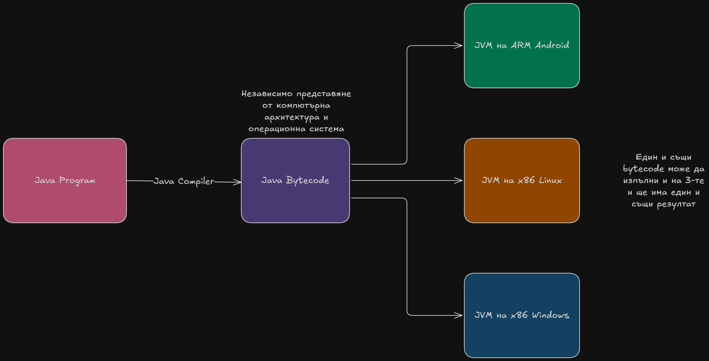
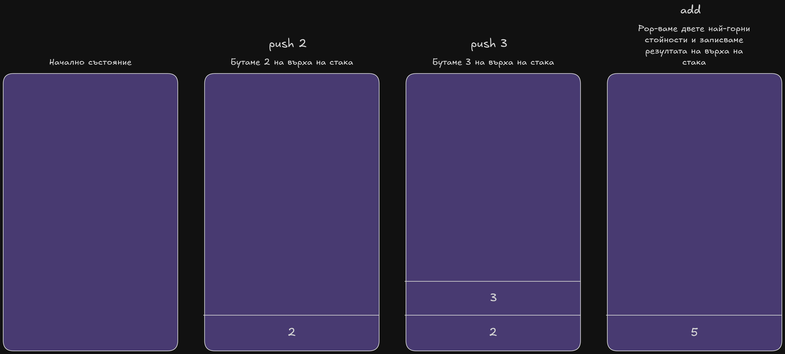

WebAssembly (или Wasm) e лесно преносим, безопасен кодов формат от
ниско ниво създаден за бързо изпълнение и малък размер. Основната му
цел е да позволи съществуването на високо производителни програми за
уеб средата, написани на езици различни от JavaScript. Въпреки името
си, стандартът НЕ разчита на функционалности, които са
специфични за уеб средата, което му позволява бъде използван в други
среди.
На по ниско ниво WebAssembly представлява (virtual instruction set
architecture) или по-просто казано bytecode. Това позволява да бъде
интегриран в най-различни среди. Стандартът дефинира
множество от инстукции,
двоично кодиране, валидиране и
семантика на изпълнението, както и
текстово представяне.
Бърз - скороста на изпълнение е близка до тази на директно
изпълняван код (native code)
Безопасен - кодът се валидира и изпълнява изолирана среда,
която предовратява повреда на данните и пробиви в сигурността
Добре дефиниран - форматът е формално дефиниран
Хардуерна независим - може да бъде компилиран на всички
съвременни архитектури, включително за мобилни устройства и
вградени системи
Езикова независим - не се очаква конкретена програмна
парадигма или обектен модел
Платформена независим - може да върви в броузъра, на
отделна виртуална машина или интегрирана в други среди
Компактен - двоичнят формат е по-малък от типичните
текстови или директно изпълними формати (native code formats)
Модулярен - програмата лесно може да бъде разделена части,
които могат да бъдат изпратени, кеширани и използвани отделно.
Ефективен - декодирането, валидирането и компилацията може
стане с едно преминаване, независимо дали използваме JIT или AOT
компилация
Поточен - декодирането, валидирането и компилацията могат
да започнат без да е нужно всички данни да са били заредени
Лесен за паралелизиране - декодирането, валидирането и
компилацията могат да бъдат разделени лесно на независими задачи
Основни понятия в Wasm
WebAssembly е двоично представяне на език от ниско ниво, който прилича
на assembly. Което с други думи означава, че Wasm е bytecode, но какво
е bytecode.
Bytecode
Bytecode е междинно представяне под формата на множество инструкции.
Той се намира между човешко-читаемия код и машинния код.
Най-известният пример за bytecode е Java bytecode. Компилаторът на
Java валидира програмата, проверява типовете и генерира bytecode-а.
След това той се подава на JVM (Java Virtual Machine), който го
компилира до машинен код и го изпълнява. Това позволява на
програмистите да пишат код, който е независим от компютърната
архитектура, операционната система и средата за изпълнение.

Диаграма 1 - компилация и изпълнение на Java bytecode
Докато Java bytecode се абстрахира от компютърната архитектура и
операционната система чрез JVM, Wasm бута идеята за bytecode една
стъпка по-напред, като се абстрахира от и платформата чрез инструкции
на по-ниско ниво. Това позволява на различни езици за програмиране да
компилират код за Wasm, без да са обвързани с ограниченията на
конкретна среда като JVM, която изисква езикът да бъде
обектно-ориентиран или да поддържа garbage collection.
В секция WAT ще разгледаме част от инструкциите в
Wasm, но преди това важно да се отбележи, че изчислителният модел на
WebAssembly e stack machine, но какво е stack
machine.
Stack machine
Stack machine е изчислителен модел, при който инструкциите, вместо
да използват регистри, използват стека, за да съхраняват аргументи
(дърпа ги от върха на стека) и да записват резултата обратно на
стека (бутат го на върха на стека). Този подход е предпочитан от
много виртуални машини поради следните предимства:
По-компактни инструкции - инструкциите в stack machine не
съдържат адреси на регистри
Лесно генериране код от езици от по-високо ниво - Повечето
езици за програмиране използват локални променливи и изрази, които
естествено се съхраняват върху стек.
Хардуернa независимост - не е нужно да съобразява с
регистровата организация на процесора.
По-лесна валидация на кода - улеснява се проверката за
типове

Диаграма 2 - събиране на 2 числа в стекова машина
Повечето програми имат нужда от нещо повече от стек за да съхраняват
обекти, чиито размер не е известен по-време на компилация. Тук идва
темата за организация на памет. Wasm изпозва linear memory модел за
организация на паметта.
Linear memory
Linear memory e продължителен, изменяем (mutable) масив от байтове.
Тази памет първоначно бива създадена с отпределен размер, но може да
расте динамично. Програма може да зарежда и съхранява стойности
от/на linear memory на произволен байтов адрес (включително на
неподравнен). Този модел има много предимства, но и недостатъци:
Предимства
Лесен за имплементация - Лесно се имплементира в броузър и
други среди, както и улеснява работата на компилаторите.
Лесно преносим - една и съща структура за всеки процесор за
разлика от paged memory
Бърз - адресите се смятат директно, докато във paged memory
виртуалните адреси трябва да се преведат до реалните.
Подходящ за системни езици - въпреки, че една от целите
Wasm e да е независим от език за програмине, linear memory моделът
работи много добре със системни езици като Rust, C и C++
Недостатъци
Затруднена подръжка на Garbage Collector - моделът не
предоставя необходимата информация, на която повечето Garbage
Collector-и разчитат. За да решат този проблем беше разработено
разширение към WebAssembly стандарта - наречен WasmGC, което не
използва linear memory
Задрунено многонишково програмиране - нишките в Wasm имат
от нуждаят от SharedArrayBuffer, което е изключено по подразбиране
в модерните броузъри.
Host
Обикновено WebAssembly имплементация ще бъде вградена в host срада,
което ще определя как различните модули ще бъдат зареждани, как
импортите ще бъдат предоставени, включително дениции от host-a и как
експортите ще бъдат достъпвани.
История на версиите
Wasm 1.0 (MVP)
Преди да разгледаме какво е било добавено в следващите версии на
Wasm, трябва да разгледаме как е излглеждало WebAssembly в първата
си версия (известна още като MVP). Тук ще опишем структурата на една
Wasm програма,докато в следващата секция WAT ще
разгледаме конкретни примери. MVP-то описва WebAssembly като
bytecode за стекова машина, която използва linear memory с 32-битови
адреси.
Module
Всяка Wasm програма се състои от независим модули.
Модулът е основната единица за разпостранение в света на
WebAssembly. Всеки модул може да съдържа секция за
типове на функции, функции,
таблици, глобални променливи,
памети, импортове и
експортове
Types
В MVP e имало 4 типа данни i32,
i64, f32 и f64.
i32 и i64 представляват съответно 32-битово и 64-битово цяло число
(interger - от там i32 - integer 32 bits). f32 и f64 представляват
съответно 32-битово и 64-битово число с плаваща запетая описани в
IEEE 754.
i32 се използва като ykaзател понеже Wasm 1.0 има 32-битово адресно
постанство.
Functions
За всяка функция в WebAssembly трябва се укажат типа параметрите и
типа на резултите. Докато в първата версия се позволява да се връща
само една стойност, това се променя в следващите версиии. Типовете
на глобалните променливи също трябва се укажат както и дали
глобалната променлива може да се променя или не (mut or const).
Tables
Таблиците в Wasm MVP-то са представлявали масиви от скрити
референции (opaque references - референция към обект, чиято вътрешна
структура не е достъпна, не е видима или не може да бъде
манипулирана директно.). Само един такъв тип е съществувал и това е
funcref (референция към функция). Таблиците позволяват
съществуването на указатели към функции (function pointers),
vtables,
динамично избиране на метод (dynamic dispaching) и други.
Memory
В горната секция
Linear memory обеснихме какво е linear
memory. Важно е да се спомене е, че когато в Wasm се каже, че памет
има размер 1 се има предвид 64 килобайта. Паметта може да расте само
с отрязъци кратни на 64 килобайта
Imports and exports
Импортовете и експортовете позволяват WebAssembly да обменя данни с
host средата. Импортовете позволяват на Wasm да използва функции и
данни предоставени от host средата , докато експортовете позволяват
host средата да вика функции декларирани в Wasm. Пример за импорт би
било функция, която дава достъп на WebAssembly да DOM-а, докато
пример за експорт би бил някой алгоритъм, който е написан на Wasm с
цел бързо изпълнение като звукова или видео обработка
Нововъведения в Wasm 2.0
SIMD
Основното въведение в Wasm 2.0 е типа v128, който
има големина 128-бита и позволява
SIMD операции (Single Instruction, Multiple Data).
С този тип са добабавени повече от 60 нови инструкции, които
представляват различни SIMD операции. В този реферат няма да се
обърне голямо внимание на тях.
Други въведения в Wasm 2.0
Други по-малки въведения позволяват на функциите и блоковете да
връщат няколко стойности, дефинирането на няколко таблици и други.
Нововъведения в Wasm 3.0
Garbage Collection
Най-голямото въведение в Wasm 3.0 въведението на
Garbage Collection. Предлага алтернативен модел на
памет от linear-memory и използва WasmGC. Въвежда
няколко нови референтни типове за позволи на компилаторите да
генерират код, който изпозва WasmGC. В този реферат няма обърне
голямо внимание на Garbage Collector-a понеже, кодът който излиза от
компилатора е тежък за четене и излиза от основите.
64-битово адресно пространсто
Вече за указатели може да използва i64, което вдига възможната
памет, която един модул може да алокира от 4 гигабайта, до
теоретично 16 exabytes (16,777,216 терабайта)
Exception Handling
Wasm 3.0 предоставя механизми за работата с изключения, което беше
едиственото нещо от C++, което не може да се представи в
WebAssembly. Хакове съществуваха, които заобикаляха този проблем, но
вече това не е нужно. Това се постига чрез добавянето на нова секция
за tags в модул, която описва типовете изключения.
Освен новата секция бяха добавени и няколко инструкции за работа с
изключения
Multiple Memories
От Wasm 3.0 нататък е модул може да дефинира няколко памети, които
да растат независимо една от друга
Tail Calls
Друго малко въведение, което беше добавено, което е ключово за много
функционалнални езици
Бъдещи въведения
Авторите споменаха, че две възможни въведения са нишки (threads) и
stack-switching, което ще позволи неща като coroutines и green
threads. Ако тези неща бъдат изпълнени можем да видим езици като
java и c# да се компилаторат до WebAssembly.
WAT
Преди да продължим с примерите, трябва да разгледаме синтаксиса на
Wasm, но той е двоичен двоичен формат и не предназначен да бъде четен
от хора. За щастие създателите на WebAssembly са помислили за това.
WAT (WebAssembly Text) е текстова репрезентация на Wasm.
Синтаксисът на WAT наподобява Lisp (Scheme е диалект на Lisp).
Възмойно най-простата програма на WAT е:
(module)
Код снипет 1 - най-простият WAT модул
Код снипет 1 декларира празен модул. В
секция Wasm 1.0 - (MVP) разгледахме съставните
части на един модул. Нека сега видим как изглежда един модул с
единствена функция, която събира аргументи си.
(module
(func $add (param $a i32) (param $b i32) (result i32)
local.get $a ;; $a е 32-битово цяло число и го бутаме на стека
local.get $b ;; същото се отнася за $b
;; тази инстукция дърпа двете най-горни стойности
;; и ги събира като бута резултата на върха на стека
;; функцията "връща" сбора, понеже той е най-горния
i32.add ;; елемент на стека
))
Код снипет 2 - WAT модул с функция за събиране
На диаграма 2 e показанa функцията от
код снипет 2. Опционално можем да
кръщаваме функции си както в
код снипет 2 - в случая $add. По
същия начин опционално можем да кръщаваме параметрите на функция - в
случая $a и $b. В противен случай $a и
$b се достъпват с 0 и 1.
В таблица 1 са показани част инструкциите в
WAT. В таблицата са показани операции само за i32, но същите операции
същестуват за i64, f32 и f64. Булевите операции получават i32 като
аргументи, където 0 се приема за false и
всяко друго цяло число за true. В таблицата също няма да
сложим инстукциите if,else, end, loop и
call - тях ще ги разгледаме в примерите
Инстр.
Аргум.
Резултат
Описание
local.get
индекс или име на локална променлива
стойността на локалната променлива
Бута стойността на локална променлива на стека
local.set
индекс или име на локална променлива
няма
Дърпа стойност от стека и я записва в локалната променлива
global.get
индекс или име на глобална променлива
стойността на глобалната променлива
Бута стойността на глобалната променлива на стека
global.set
индекс или име на глобална променлива
няма
Дърпа стойност от стека и я записва в глобалната променлива
i32.const
immediate i32
i32
Бута i32 константа на стека
i64.const
immediate i64
i64
Бута i64 константа на стека
f32.const
immediate f32
f32
Бута f32 константа на стека
f64.const
immediate f64
f64
Бута f64 константа на стека
i32.add
(i32, i32)
i32
Дърпа две i32 стойности от стека и бута сбора им
i32.sub
(i32, i32)
i32
Дърпа две i32 стойности от стека и бута разликата им
i32.mul
(i32, i32)
i32
Дърпа две i32 стойности от стека и бута произдението им
i32.div_s
(i32, i32)
i32
Дърпа две i32 стойности със знак от стека и бута частното им
i32.rem_s
(i32, i32)
i32
Дърпа две i32 стойности със знак от стека и бута остатъка им
i32.rem_s
(i32, i32)
i32
Дърпа две i32 стойности със знак от стека и бута остатъка им
i32.eq
(i32, i32)
i32(0/1)
Дърпа две i32 стойности от стека и бута резултата от
проверката за равенство им
i32.ne
(i32, i32)
i32(0/1)
Дърпа две i32 стойности от стека и бута резултата от
проверката за неравенството им
i32.lt_s
(i32, i32)
i32(0/1)
Дърпа две i32 стойности със знак от стека и бута резултата от
проверката за по-малко
i32.gt_s
(i32, i32)
i32(0/1)
Дърпа две i32 стойности със знак от стека и бута резултата от
проверката за по-голямо
i32.eqz
i32
i32(0/1)
Дърпa i32 стойнос от стека и бута резултата от логическа
негация
i32.and
(i32, i32)
i32
Дърпа две i32 стойности от стека и бута резултата от побитово
и, ако аргументи са 0/1 действа като логически и
i32.or
(i32, i32)
i32
Дърпа две i32 стойности от стека и бута резултата от побитово
или, ако аргументи са 0/1 действа като логически или
i32.load
i32/i64 адрес в памета
i32
Взема стойност от памета и я бута на стека
i32.store
i32/i64 адрес в памета
няма
Дърпа стойност от стека и я записва в памета
Таблица 1 - WAT инструкции
За да позволим на host средата да извиква функции, които сме
дефинирали в Wasm, трябва да ги експортнем.
Код снипет 3 показва как експортнем
функцията $add под името add.
(module
(func $add (param $a i32) (param $b i32) (result i32)
local.get $a ;; $a е 32-битово цяло число и го бутаме на стека
local.get $b ;; същото се отнася за $b
;; тази инстукция дърпа двете най-горни стойности
;; и ги събира като бута резултата на върха на стека
;; функцията "връща" сбора, понеже той е най-горния
i32.add ;; елемент на стека
)
;; експортва функцията $add под името add
(export "add" (func $add))
)
Код снипет 3 - Експортване на функции
В някой случай бихме искали Wasm да взаимодейства директно host
средата (в случая JavaScript). Това може да се постигне като импортнем
функция от host средата. в
код снипет 4 ще импортнем функция, която
ще ни позволи, да покажем резултата от събиране директно в DOM-a
(module
;; импортваме функция от js,
;; която ще принтира i32
;; на DOM-a
(import "js" "print" (func $print (param i32)))
(func $add (param $a i32) (param $b i32)
local.get $a ;; $a е 32-битово цяло число и го бутаме на стека
local.get $b ;; същото се отнася за $b
;; тази инстукция дърпа двете най-горни стойности
;; и ги събира като бута резултата на върха на стека
;; функцията "връща" сбора, понеже той е най-горния
i32.add ;; елемент на стека
call $print ;; извиква импортната функция с аргумент сбора
)
;; експортва функцията $add под името add
(export "add" (func $add))
)
Код снипет 4 - Импортиране на функции
Форма 1 - Събиране и принтиране с импортната функция
В Wasm може да викаме не само импортнати функции, но и такива, които
ние сме декларирали (включително рекурсивно). В
код снипет 5 ще разгледаме как би
изглеждала една рекурсивна имплементация на числата на Фибоначи
(module
;; импортваме функция, която изчиства списъка от резултати
;; няма параметри и не връща нищо
(import "js" "clear" (func $clear))
;; импортваме функция, която добавя число в списъка
;; от резултати
(import "js" "print" (func $print (param i32)))
;; декларираме функция, която смята
;; n-то числи на Фибоначи
(func $fibb (param $n i32) (result i32)
local.get $n ;; бута n на стека
i32.const 0 ;; бута константата 0 на стека
i32.eq ;; сравнява n и 0,ако n==0 бута 1, иначе бута 0
local.get $n ;; бута n на стека
i32.const 1 ;; бута константата 1 на стека
i32.eq ;; сравнява n и 1,ако n==1 бута 1, иначе бута 0
;; в момента на стека са резултата от n==0 и n==1
i32.or ;; прави or на тези двата резултата и го бута на стека
;; проверява дали върха на стека е различен от 0.
if (result i32) ;; трябва да кажем какъв е резултата понеже wasm е типизиран
;; тук влиза, ако n==0 || n==1
i32.const 1 ;; бута 1 на стека и понеже if е последната инструкция, то и връща 1
else
;; тук влиза, ако не е в сприрачката на рекурсията
local.get $n;; бута n на стека
i32.const 1 ;; бута 1 на стека
i32.sub ;; смята n-1 и го слага на стека
call $fibb ;; прави рекурсивно извикване на fibb(n-1)
local.get $n;; бута n на стека
i32.const 2 ;; бута 2 на стека
i32.sub ;; смята n-2 и го слага на стека
call $fibb ;; прави рекурсивно извикване на fibb(n-2)
;; в момента на стека има две стойности fibb(n-1) и fibb(n-2)
;; събира резултата на fibb(n-1) и резултата на fibb(n-2)
i32.add ;; и понеже това е последната операция това се връщa
end
)
;; функция, която принтира първите n числа на Фибоначи
;; (local $i i32) декларира, че функция има една локална променлива
(func $nfibb (param $n i32) (local $i i32)
call $clear ;; изчистваме стария списък от резултати
local.get $n ;; бута стойността на $n на стека
i32.const 1 ;; бута 1 на стека
i32.ge_s ;; сравнява 1 и n,ако 1<=$n бута 1, иначе бута 0
if ;; проверява дали върха на стека е различен от 0.
;; влиза тук, ако 1 <= $n, тоест има поне една итерация
i32.const 1 ;; бута 1 на стека
local.set $i ;; инициализираме $i със стойност 1
;; започва цикъл
loop $loop ;; слагаме за да можем по-лесно да работим цикъла
;; тялото на цикъла започва от тук
local.get $i ;; бута стойността на $i на стека
;; дърпа стойността на $i
call $fibb ;; и бута стойността на i-то числото на Фибоначи
call $print ;; дърпа числото на Фибоначи и го принтира
;; тялото на цикъла свършва тук
;; еквивалентно на print(fibb(i))
;; увличава $i с 1
local.get $i ;; бута стойността на $i на стека
i32.const 1 ;; бута 1 на стела
i32.add ;; събира ги
local.set $i ;; дърпа сбора от стека и го запазва в $i
;; проверява дали $i <= $n
local.get $n;; бута стойността на $n на стека
local.get $i;; бута стойността на $i на стека
i32.ge_s ;; сравнява $i и $n и бута 1, ако $i<=$n, иначе бута 0
br_if $loop ;; продължава цикъла, ако $i <= $n
end
end
)
(export "nfibb" (func $nfibb));; експортваме функцията fibb за да можем да я викнем от javascript
)
Код снипет 5 - Първите n числа на ФибоначиФорма 2 - Изчисли до n-то число на Фибоначи
Форма 2 демонстрира кода от
код снипет 5. Забележка: не пробвайте
със стойности по-големи от 45, защото табът най-вероятно ще крашне
За да позволим на Wasm да работи с по-сложни данни от числа, трябва да
създадем памет, на която да се съхраняват. В
код снипет 6 ще създадем памет (linear
memory) и ще покажем функция, която поздравява по дадено име.
(module
;; импортваме функция от js,
;; която ще принтира поздрава на DOM-a
(import "js" "print" (func $print (param i32)))
;; декларираме помощна функция, която да копира данни от едно място
;; на друго, подобна функция съществува в C
;; тялото е еквивалент на
;; for (int i = 0; i < len; i++) {
;; dst[i] = src[i];
;; }
(func $memcpy (param $dst i32) (param $src i32) (param $len i32)
(local $i i32) (local $byte i32) ;; декларираме локална променлива $i iи $byte
i32.const 0 ;; бута 0 на стека
local.set $i ;; инициализираме $i със стойност 0
local.get $len ;; бута стойността на $len на стека
local.get $i ;; бута 0 на стека
i32.gt_s ;; сравнява $i и $len, ако $i<$len бута 1, иначе бута 0
if ;; проверява дали върха на стека е различен от 0.
;; влиза тук, ако $i < $n, тоест има поне една итерация
;; започва цикъл
loop $loop ;; слагаме за да можем по-лесно да работим цикъла
;; тялото на цикъла започва от тук
local.get $i ;; бута стойността на $i на стека
local.get $src;; бута стойността на $src на стека
i32.add ;; събира ги, src+i е адреса на текущия байт в паметта
;; дърпа стойността на src+i от стека
i32.load8_u ;; и бута стойността на текищия байта на стека
local.set $byte;; запазва в текужия байт в $byte
local.get $i ;; бута стойността на $i на стека
local.get $dst;; бута стойността на $dst на стека
;; събира ги, dst+i е адреса,
i32.add ;; където трябва да запишем текущия байт
local.get $byte ;; бута стойността на текущия байт на стека
;; дърпа стойнстта на текущия байт от стека
i32.store8 ;; я записва в паметта на адрес dst+i
;; тялото на цикъла свършва тук
;; еквивалентно на dst[i] = src[i]
;; увличава $i с 1
local.get $i ;; бута стойността на $i на стека
i32.const 1 ;; бута 1 на стела
i32.add ;; събира ги
local.set $i ;; дърпа сбора от стека и го запазва в $i
;; проверява дали $i < $len
local.get $len;; бута стойността на $n на стека
local.get $i;; бута стойността на $i на стека
i32.gt_s ;; сравнява $i и $n и бута 1, ако $i<$len, иначе бута 0
br_if $loop ;; продължава цикъла, ако $i < $len
end
end
)
;; деклалираме функция $greet, която получава указател до началото
;; на името и дължината името в байтове и връща адреса на
;; новия низ в памета. i32 се използва като указател тук
(func $greet (param $namePtr i32) (param $nameLen i32)
;; декларираме една локална променлива, която ще служи като
;; указател към резултата
(local $resultPtr i32)
i32.const 16384 ;; бута 16384 на стека
local.set $resultPtr;; записва 16384 в локалната променлива
local.get $resultPtr;; бутаме адреса на резултата на стека
i32.const 0 ;; 0 е адреса на "Здравей, "
i32.const 16 ;; 20 е размера на "Здрвей, "
call $memcpy ;; копира "Здравей, " в резултата
local.get $resultPtr;; бутаме адреса на резултата на стека
i32.const 16 ;; бутаме константата 16 на стека
;; събираме ги, понеже вече "Здравей, "
;; е записан в резултата, трябва да продължи
i32.add ;; на следващия свободен байт, и именно $resultPtr + 16
local.get $namePtr ;; бута адреса на името на стека
local.get $nameLen ;; бута дължината на името на стека
call $memcpy
local.get $resultPtr
call $print
)
;; деклалираме памет с големина 64 килобайта
;; разположението в паметта е изцяло по преценка на автора
;; низови константи като "Здравей, " ще се съхраняват в адресите [0, 128)
;; входен низ (името) ще се съхраняват в адресите [128, 16384)
;; резултатен низ (поздрава) ще се съхранява в адресите [16384, 65536)
(memory $memory 1)
(data (i32.const 0) "Здравей, ")
(export "greet" (func $greet))
(export "memory" (memory $memory))
)
Код снипет 6 - Програма, която поздравяваФорма 3 - Поздрав от Wasm
В секция Wat разгледахме няколко примера за Wasm,
но също можем да забележим, че кода става доста труден за четене дори
за прости програми с една или две функции. На практика почти никой не
пише Wasm на ръка. Вместо това използват други езици, които могат да
се компилират да WebAssembly. В момента за почти всеки от известените
езици съществува компилатор за Wasm, но езиците, които най-често се
ползват са C++ и Rust.
C++ изпозва
Emscriptenкойто най-често служи за пренасяне на съществуващи стари проекти към
WebAssembly, както и за компилиране на видео игри, които искаме да
работят в браузъра.
Rust изпозва
wasm-pack. Rust
използва wasm-pack. Rust предоставя най-добрата екосистема за
WebAssembly към момента на създаването на този реферат. Компилаторът
може директно да компилира Rust код до Wasm, а екосистемата включва
множество полезни библиотеки, като wasm-bindgen. Поради тези причини
ще използваме Rust, за да демонстрираме предимствата на Wasm с един
по-голям пример. Примерът ще бъде Solver на известната игра 8-puzzle: